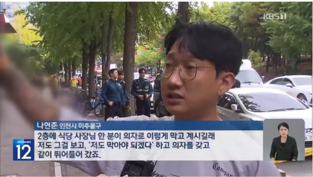

"문신 싫어하는데, 저분 멋있어"…인천 칼부림 막은 의인, 이레즈미 '반전' : 네이트 뉴스

인천에서 흉기 난동을 벌인 50대 피의자를 제압한 의인의 인터뷰 영상에 뜻밖의 반응이 이어졌다.
주인공은 KBS 뉴스에 등장한 나현준(31)씨다.
그는 당시 상황에 대해 "식당 사장님이 의자로 막고 계셨는데 혼자서는 못 막을 것 같아 저도 도왔다. 의자를 던지기도 하고 휘두르기도 하면서 흉기를 휘두르는 피의자의 공격을 가까스로 막았다"고 밝혔다.
그의 모습이 담긴 KBS 인터뷰 영상을 본 누리꾼들은 양쪽 팔에 그려진 문신에 주목했다.
나씨가 인터뷰하며 손짓하는 장면에서 양쪽 팔에 가득 그려진 문신이 그대로 노출됐다.
피부 전체를 덮는 이른바 '이레즈미' 문신은 통상 범죄성과 연관된 이미지로 여겨지는데,
범죄자를 막은 의인이 해당 문신을 한 모습에 누리꾼들은 '반전'이라는 반응이다.
긁힌건 찐따개붕이인 니고
참고로 나 문신안했으니까 동현이만들지말고 페미마냥 ㅋㅋㅋㅋㅋ